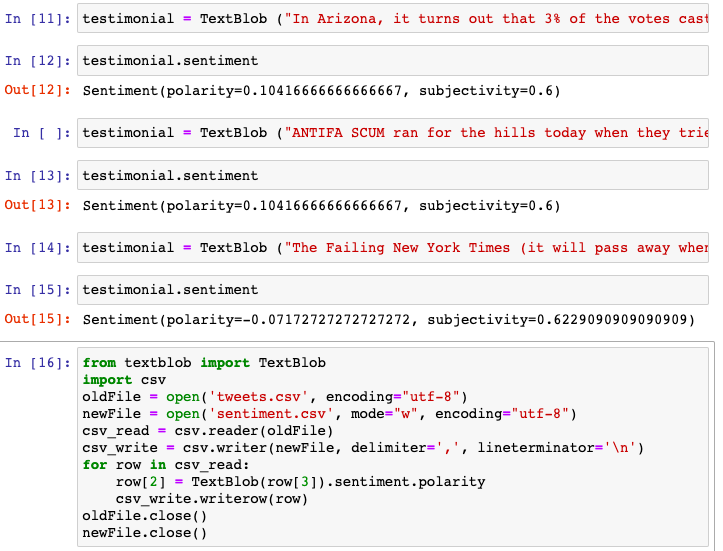

How America's most controversial President uses Twitter
Donald Trump is perhaps America's most controversial President. When talking about Trump, it would be lacking to not mention his notorious Twitter. Trump is known for not shying away from using Twitter to express his personal opinions. Trump's tweets, many times that made the front page headlines or broke the Internet, were considered even more official and viral compared to the White House's statements. However, looking at some of Trump's tweets, I found some interesting inconsistencies in the ways he talks - or rather, tweets. Sometimes his Tweets appear very personal and subjective. Here is an example:

Other times, his tweets appear quite neutral and objective, almost as if they were written by someone else:

This got me wondering: Did Trump write all his tweets? Or could it be someone else? Is there a way to know? It is quite common for politicians to have staff responsible for social media communication, so perhaps Trump was not an exception. With data science, I was able to find the answer to the above questions.
There were indeed staff and Trump himself who have access to the same Twitter @realDonaldTrump.
How did I figure it out? Let's take a look at the process.I needed an extensive of Trump's twitter data, and fortunately The Trump Archive contains all the information I needed. I processed my data via Excel. The extensive dataset contains all Trump's tweets since 2012, their unique IDs, contents, time and date of posting, and interestingly, the devices they were posted from originally. To narrow down on unnecessary data, I filtered out retweets, posting that are outside of Trump's presidency (2016-2021), and those with little values (less than 30 favorites). As it turns out, Trump posted his Tweets from multiple devices over the course of his presidency. I visualized the frequency of devices used over years during Trump's administration.
Android and iPhone tweets were most common, and after 2017 iPhone became the main device. Looking closer at the time and date of the tweets, especially during 2016-2017, it appears that tweets were posted from both devices on many overlapping days, at different times and different frequencies.
Is it possible that Android and iPhone users are different people? Another analysis into tweets' contents can confirm this. I looked into the content differences in the iPhone and Android tweets. Most of the iPhone tweets appear to be like announcements, with lots of hastags and image links:
Just landed in North Carolina- heading to the J.S. Dorton Arena. See you all soon! Lets #MakeAmericaGreatAgain! https://t.co/EUo0keWX1Y
— Donald J. Trump (@realDonaldTrump) November 7, 2016While most of the Android tend to express personal statements:
Are we talking about the same cyberattack where it was revealed that head of the DNC illegally gave Hillary the questions to the debate?
— Donald J. Trump (@realDonaldTrump) November 19, 2016I sorted the data to see how often the iPhone/Android tweets contain image links and hastags. I flitered tweets that contains either "https" links or hastags, and then sorted them accordingly to iPhone/Android devices. With the results collected, I created this bar graph via inforgram.
As demonstrated by the visualization, iPhone tweets contain a lot more hastags and link redirects, and have more official, announcement-like contents. Meanwhile, the Android ones appear to have mostly just personal statements, with simple, informal language.
Another way to prove the hypothesis is to compare the language and emotions behind the text. I conducted a sentiment analysis - the interpretation and classification of human emotions (positive, negative and neutral) within text data. Using TextBlob, a Python library for sentiment analysis, I ran the Twitter's contents as data inputs and was able to get some sentiment figures. The algorithm is not absolutely accurate, but it gives an idea of the emotions portrayed behind the tweets. The polarity scale goes from -1 being negative, 0 means neutral and 1 being positive sentiments. The subjectivity scale goes from -1 meaning very subjective to 1 being very objective.
Sentiment Analysis via TextBlob
Below are the comparison of the iPhone versus Android sentiment visualizations.
It appears that tweets from Android devices are more negatively-skewed, while the iPhone tweets seem to be more neutral towards positive. The above sentiment analysis, combined with the tweeting frequency, indicates that Android and iPhone tweets are clearly from different people. This confirms our findings: The Android tweets are most likely written by Donald Trump himself, while iPhone tweets are likely to be written by staff for political campaigns or agenda purposes.
What about tweets after 2017, when the Android phone is no longer used? How can we tell whether Trump or his staff wrote the Tweet? It is possible to tell the tweets' authors by comparing the similarity in language of Trump's Android tweets versus post-2017 iPhone tweets. Unfortunately, this is beyond my programming skills. Luckily there are intelligent algorithms that are particularly trained for this purpose, such as:
Intelligent algorithms as above look into factors such as: language, connotation, use of links/hastags, writing style, frequent words, and sentiments to decide how similar the Tweets are. The algorithms works by comparing the similarities among the tweets. The more they belong into a cluster, the higher the likelihood that they share the same author. After all, people can change their devices, but the way they tweet and communicate to the public stays the same.
Source: